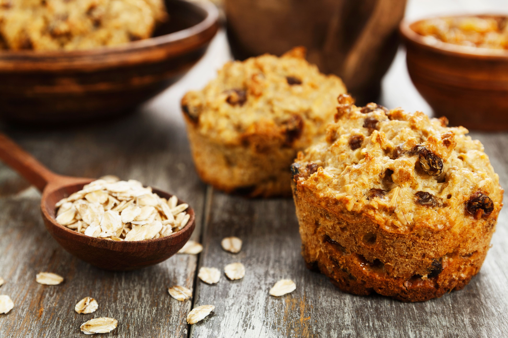
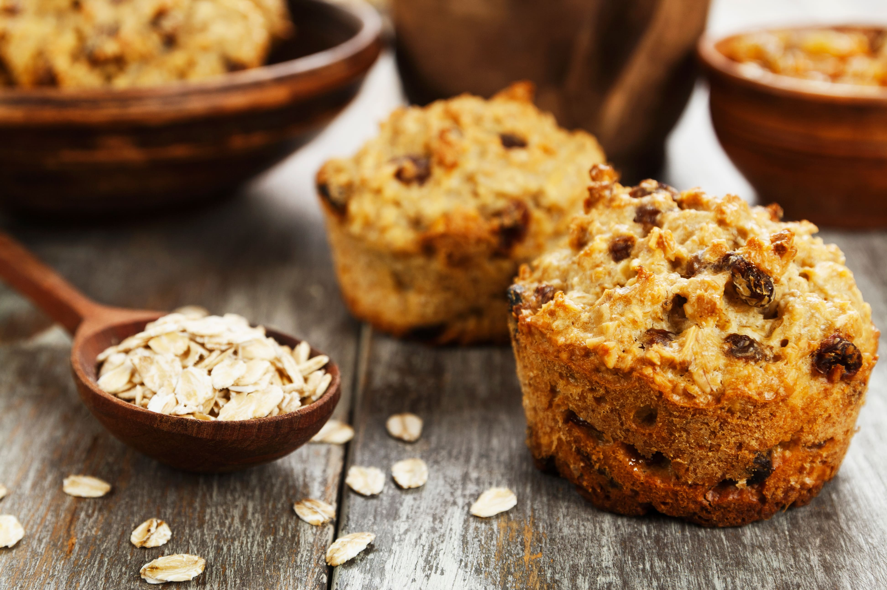
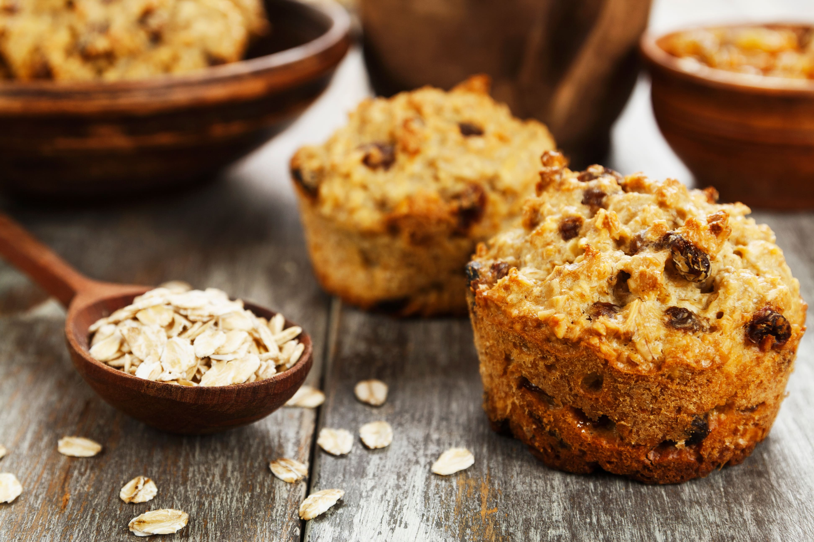

Beautiful RICE ISLAND
おいしく食べて、からだの中から健康美

おいしく食べて、からだの中から健康美
雑穀や玄米は、手軽に食物繊維をプラスできる食材です。白米に混ぜて炊く「雑穀ごはん」のほか、サラダやパンのトッピングなど幅広く料理に使えます。
オートミールとはオーツ麦（燕麦）を脱穀して食べやすく加工したものです。牛乳やヨーグルトをかけて食べたり、ドライフルーツやシロップなどで自分好みにカスタマイズできるのが特徴です。
もち麦とは、粘りの強い「もち性」の大麦の総称です。もち麦は食物繊維が豊富で、ぷちぷち・もちもちした食感があっておいしいのが特徴です。
有楽町・東京交通会館1Fにあるファクトリーショップです。
雑穀、大麦、シリアル（グラノーラ、ミューズリー、オートミール）など、食物繊維たっぷりの穀物を幅広く販売しています。
あわ・ひえ・きび・黒米・赤米・紅きび・はと麦・アマランサス・キヌア・チアシード・発芽玄米・玄麦・白麦・米粒麦・はだか麦・丸麦 などなど